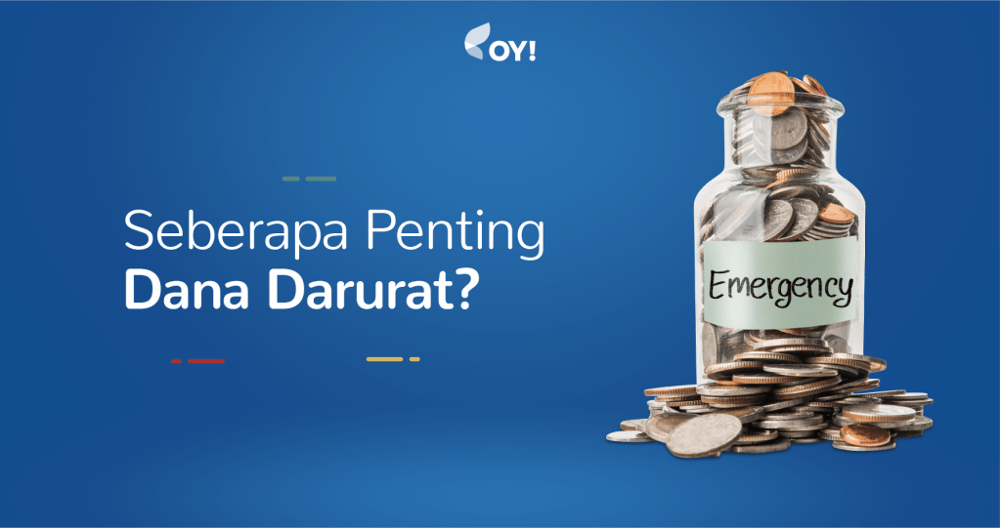

Kenapa Dana Darurat Harus Duluan Sebelum Investasi
[14/08/2026 / Ammar H.A.]

Banyak orang seringkali berpikir bahwa investasi adalah cara terbaik untuk membuat uang bertambah, namun mereka sering kali mengabaikan pentingnya memiliki dana darurat terlebih dahulu. padahal manfaat dari dana darurat juga tidak kalah penting.
Apa sih dana darurat itu?
Dana Darurat merupakan dana yang disisipkan untuk menangani situasi darurat, seperti pada saat kita mengalami kehilangan pekerjaan, menderita sakit yang membatasi aktiVitas, atau menghadapi musibah lainnya yang tidak terduga.
Berapa besaran idealnya?
Besaran ideal dari dana darurat biasanya berkisar antara 3 hingga 12 bulan pengeluaran bulanan, tergantung pada kondisi pribadi dan situasi finansial.
- Single, gak ada tanggungan: 3x pengeluaran bulanan
- Menikah, belum ada anak: 6x pengeluaran bulanan
- Menikah + anak / freelance: 9-12x pengeluaran bulanan
Di mana sebaiknya disimpan?
Dana darurat sebaiknya disimpan di rekening tabungan atau instrumen likuid lainnya yang mudah diakses namun tidak terlalu menggoda untuk digunakan untuk keperluan non-darurat. Kita dapat menggunakan rekening tabungan berbeda untuk menyimpan dana darurat ini. bukan di reksadana atau saham karena risiko dan volatilitasnya yang belum tentu menguntungkan.
Kesimpulan
Dana darurat adalah komponen penting dalam manajemen keuangan pribadi. Meskipun investasi memberikan potensi keuntungan jangka panjang, dana darurat memberikan perlindungan finansial yang diperlukan dalam situasi tidak terduga. Oleh karena itu, sebaiknya dana darurat disiapkan terlebih dahulu sebelum memulai investasi.
← Kembali ke Beranda